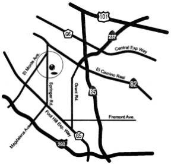
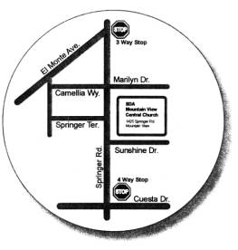

Piano Recital
Sunday,
March 9, 2003 2:00 p.m.
1. Emma Iwasaki チューリップ (song) 井上 武士
Haruka Oyake 春が来た (song) 岡野 貞一
Genki Tsuchiya
Mayu
Yoshikawa
Shiori Wago
2.
Mayu Yoshikawa Yankee Doodle Folk Song
Space Flight Bastien
Old Mac Donald Folk Song
3. Haruka Oyake I’m a Little Teapot Folk Song
Drums Bastien
Down in the Valley Folk Song
4. Emma
Iwasaki Airplane Ride Bastien
The Bell Tower Bastien
5. Genki
Tsuchiya Soldiers Marching Bastien
Theme from the Surprise Symphony Haydn
This Old Man Folk Song
6. Shiori Wago The Big Parade Bastien
Skip to My Lou Folk Song
Love Somebody Bastien
7. Sakiko Yazawa Little Indian Bastien
手をたたきましょう Czechoslovakia Folk
Song
8. Kasumi Osawa La Donnau e Mobile Verdi
Romeo and Juliet Tchaikowsky
Concerto No. 1 Tchaikowsky
Hungarian Dance No. 5 Brahms
9. Chiharu Ota アルハンブラの思い出 タルレガ
10. Mariko
Whistler Je Te Veux (私はあなたが大好き) Satie
夕焼けこやけ (song) 草川 信
11.
Nanae Iwasa ネコふんじゃった 作曲者不詳
L’arabesque
(アラベスク) Burgmüller
12.
Moeko Yazawa The Bear Went Over the Mountain Folk Song
君をのせて(『天空の城ラピュタ』より) 久石 譲
13.
Shotaro Kataoka La chevaleresque (乗馬) Burgmüller
Für
Elise (エリーゼのために) Beethoven
14.
Roberta Rodrigues Dos Reis
Clementine Folk Song
Lavender’s Blue English Folk Song
For His a Jolly Good Fellow English Folk Song
15. Pamella
Queiroz Ave Maria C. Gounod
16.
Akihiro Nagata Love Me Tender Elvis Presley and Vera Matson
Love
Me Tender (baritone)
おさるのかごや (baritone) 海沼 実
月の沙漠 (baritone) 佐々木 すぐる
箱根八里 (baritone) 滝 廉太郎
17. Fumiko
Hoshi Prelude No. 15 “Raindrop” op. 28-15 Chopin
Csikos
Post Necke
18. Nobuko
Query Waltz op. 64 No. 2 Chopin
Etude
in E Major op. 10 No. 3 Chopin
19. Yuko
Query Un Sospiro Liszt
Fantaisie
– Impromptu op. 66 Chopin
20. Bill
Hardy Nocturne in D-flat Major op. 27 No. 2 Chopin
Prelude
No. 5 in G Major Rachmaninoff
21. Lester
Sanchez Arioso J. S. Bach
Intermezzo
No. 2 Brahms
Paris Angelicus (organ) Cesar Frank
22.
Bill Hardy Partita No. 1 Allemande P. Bach
Lester Sanchez Invention No. 1 Bach
(on the harpsichord) Prelude in C Bach
Being held at
Mountain View Central SDA Church
1425 Springer Rd,
Mountain View
(408) 324-0372
(Kaoru Sahai)
 